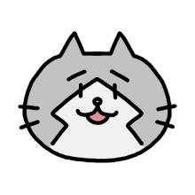

Score
0

「みっしぃとタイピング」はタイピング練習ゲームとみっしぃファンゲームです。みっしぃとタイピングを練習します。みっしぃと楽しんでくださいね。エンジョーイ☆みっしぃ！みしし
オープンソースのゲームなので、コードを見られます。あなたとみっしぃはWebプログラムイングも習えます！
初めまして、セス・クライズデールです。Webプログラマーとファルコムファンですよ。
私はファルコムとみっしぃが好きなので、みっしぃファンゲームを作りました。それに、日本語を勉強しています。だから、日本語のゲームを作るのはいい練習でした。
間違えたら、正してください。よろしくお願いします！
 ヒント：みっしぃの下の言葉をタイプする
ヒント：みっしぃの下の言葉をタイプする